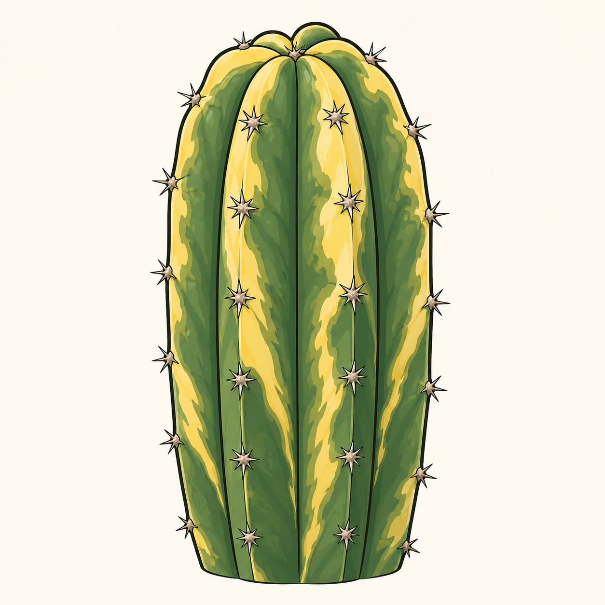
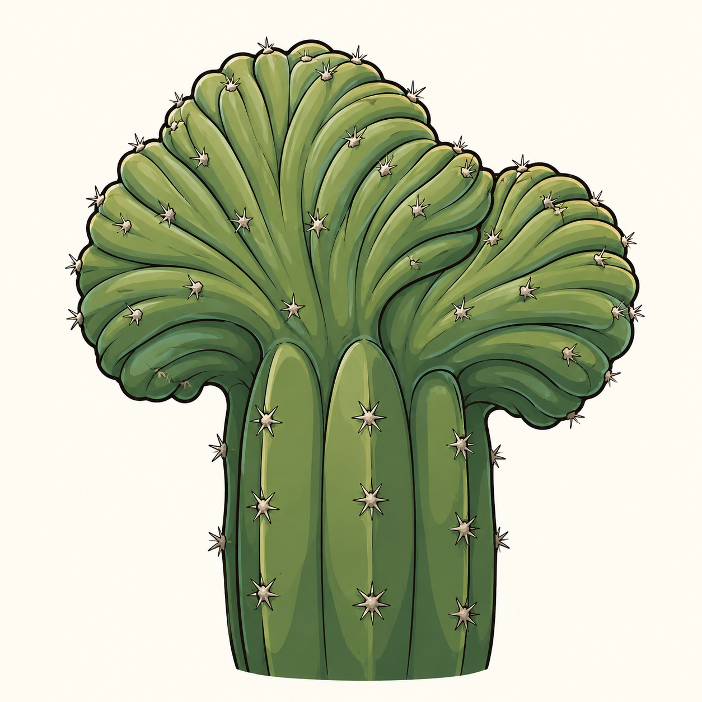

A packet of seeds, a curious kid, and a windowsill that slowly filled with green.
One rainy weekend, Archy and I planted a packet of San Pedro (Trichocereus pachanoi) seeds in a takeaway container. Honestly, I half-expected nothing to happen. Two weeks later, the tiniest green dots appeared — and Archy was hooked. Every morning before school: "Dad, are they bigger?"
And the funny thing is, I became every bit as hooked as he did. It's now my morning coffee ritual — I pour my morning roast, pull up a chair, and just sit and admire our cacti while I drink it. There's something genuinely calming about starting the day watching them slowly reach for the sun.
San Pedro is one of the most forgiving and rewarding cacti you can grow. Unlike most cacti, it tolerates far more rain — which makes it perfectly at home in Australia's harsh, arid interior, yet happy enough to handle some of our wetter coastal climates too. It grows much faster than your typical cactus, comes in a wonderful range of shapes and sizes, and once it matures it rewards you with a spectacular, large flower. For a parent and child growing their first plant together, it's hard to beat — it teaches patience without ever testing it too hard.
And growing from seed is where it gets really exciting. Every seedling is a little genetic lottery — no two are quite the same, and every so often something extraordinary turns up. You might raise a rare variegated cactus streaked with cream and gold, or a prized crested one that grows in mesmerising fan-like folds. These natural abnormalities are the holy grail for collectors, and there's a real thrill in watching a tray of seedlings, never knowing if one of them is about to do something special.

A variegated San Pedro — splashed with cream and gold where the plant makes less chlorophyll. No two are ever alike.

A crested San Pedro — instead of one column, the growing tip fans out into mesmerising folds. Highly prized.
Friends kept asking how we did it, so we wrote everything down: the soil mix that worked, the humidity trick that stopped us killing seedlings, the right amount of light, and a simple growth journal so kids can track progress. We packed it all into one box with 10 of our favourite seeds — everything a family needs to start their own windowsill jungle.
Slow things are good for us. Growing a plant from seed with your kid isn't about the plant — it's about the ten seconds each morning you spend leaning over a pot together, wondering at something alive. That's the whole point.
Sprinkle seeds on the mix, mist, and cover.
Tiny green dots in 1–3 weeks.
Little globes become columns over the seasons.
Move your strongest seedlings to their own pots.